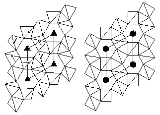
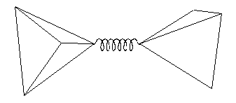

Martin T Dove
Department of Earth Sciences, University of Cambridge,
Downing Street, Cambridge CB2 3EQ
martin@esc.cam.ac.uk
Introduction

Figure 1. Polyhedral representations of the low-temperature trigonal phase (left) and high-temperature hexagonal phase (right) of quartz. The displacive phase transition between the two phases is accomplished by rotations of SiO4 tetrahedra, as indicated by the arrows.
The objective of the work that led to the development of the CRUSH code was to understand the origin of displacive phase transitions in crystal structures that can be described as frameworks or networks of connected polyhedra. For example, the famous perovskite structure can be viewed as a framework of corner-linked TiO6 (or ZrO6) octahedra, with other cations (Sr, Ba, Pb ...) sitting inside small cavities within the framework. Some of the displacive phase transitions in the family of perovskites involve rotations of the octahedra. Many examples are found in aluminosilicates, where there are corner-linked SiO4 and AlO4 tetrahedra in frameworks of varying topology, including chains, layers and three-dimensional networks. Examples are aluminosilicate minerals and zeolites. Many aluminosilicates with three-dimensional frameworks of tetrahedra undergo displacive phase transitions which involve distortions of the frameworks as a result of rotations and displacements of tetrahedra [1]. The most famous example is quartz, figure 1.
The displacive phase transitions we have described will involve low frequency phonons which, to first order, will require no distortions of the structural polyhedra. We call these phonons "Rigid Unit Modes" (RUMs), since they involve the polyhedra moving as if they are rigid units. RUMs may act as the classic soft modes, as in the case of quartz. The question of whether a network of linked polyhedra can distort without the constituent polyhedra having to distort also is actually a rather subtle issue that cannot be dealt with here [2], but it is sufficient to note that in general there are not many such possible distortions, and our task is to try to identify all potential distortions for a given crystal structure. This is not an easy task, and is made harder by the realisation that RUMs can occur with wave vectors that could not be guessed in advance. The purpose of the CRUSH code is to automate the enumeration of all RUMs for any given crystal structure.
Method of operation
The problem involved in computing the RUMs for a crystal structure can be described as involving two types of constraints. The first type concerns the constraints that keep the polyhedra rigid. The second type is the need to maintain the linkages between polyhedra. The approach taken in the CRUSH code is to treat the constraint on the rigidity as a strict constraint, but to treat the linkage constraints as slack constraints. This has been implemented by our "split atom method" [2], which is illustrated in Figure 2. The split-atom method then allows us to cast the dynamical problem in terms of the formalism of harmonic molecular lattice dynamics. The solution to the lattice dynamics equations will give a zero frequency to any phonon mode that does not involve distortions of the polyhedra, and the frequency of any phonon will give a measure of the extent of polyhedra distortion involved. Clearly the RUMs can easily be identified as the zero-frequency solutions. The CRUSH code also allows for a harmonic interaction between the centres of linked tetrahedra [3]. This has the effect of separating out the RUMs that do not involve the flexing of the angle subtended at the link point, and may be useful in the investigation of soft modes.

Figure 2. Representation of the split-atom method. The atom shared by two polyhedra is replaced by a stiff spring with an equilibrium length of zero. Any motions of the two polyhedra that requires them to distort is represented by the stretching of the spring, and formally the force involved in the extension of the spring is equivalent to the force required to distort the polyhedra.
The calculations can be performed at any selected wave vector. For many cases there will be no RUMs for a general wave vector, and usually we would perform the calculations for wave vectors lying on lines or planes of special symmetry in reciprocal space (e.g. points on the Brillouin zone boundary). However, this can be misleading. For some zeolites we have investigated there can be several RUMs for any general wave vector [4]. Moreover, we have found that often there are sets of wave vectors that have RUMs which form exotic curved surfaces in reciprocal space - this result was completely unexpected, and is not yet understood.
The CRUSH code performs the basic lattice dynamics calculations, but we have a number of additional programs to perform other useful functions:
IDEALISER helps set up a CRUSH run by adjusting an experimental crystal structure to form perfect or idealised polyhedra
ANALYSE will help analyse the CRUSH output by separating RUM solutions of different symmetry, and imposing k = 0 RUM distortions on the crystal structure
LOCALRUM will take a set of RUM solutions and impose them on a crystal structure to give a localised deformation, which is possible in cases such as zeolites where there may be one or more RUMs for each wave vector
The CRUSH suite of programs is described in more detail in [2,3]. The programs are written in FORTRAN and it is intended that they should be able to run on any platform. Some of the ancillary programs, but not the main CRUSH program, use NAG routines, which could be replaced by similar routines.
Range of applications
The range of applications of the RUM approach has turned out to be rather wider than we initially imagined. The main hope had been to explain the origin of phase transitions in framework structures, and we have indeed been able to explain a number of phase transitions in silicate minerals [1]. For example, the complex sequence of phase transitions in the silica polymorph tridymite is now much better understood following a detailed RUM analysis [5].
We have subsequently realised that the RUM model can be applied to a range of problems that is wider than identifying potential soft modes. These include understanding the nature of high-temperature phases (the issue of dynamic disorder within the crystal structure), understanding the origin of negative thermal expansion (as in ZrW2O8, a crystal with a network of linked ZrO6 and WO4 polyhedra), predicting localised distortions in zeolite structures, and identifying the flexibility of network glasses.
Availability of the code and further information
The first port of call should be our main RUMs web site,
This contains links to a number of other web pages, including the main web site for the CRUSH code:
http://www.esc.cam.ac.uk/mineral_sciences/crush
(which is mirrored on the CCP14 web site). These pages contain further information, together with a complete bibliography.
The suite of programs, including CRUSH, is available from these web pages as a zipped file containing the source codes. Advice and further help can be obtained by email to
martin@esc.cam.ac.uk
We have a version of CRUSH that is linked to the CERIUS2 package, which avoids the need to set up an input file. This is not available from the web sites, and anyone interested should contact us by email.
References
This list is necessarily only a small selection of the RUM bibliography, and more references are available from the web sites given above.
Acknowledgements
The development of the CRUSH code and associated suite of programs has involved the hard work of Drs Andrew Giddy, Kenton Hammonds and Michele Warren, with support from EPSRC and NERC. The RUM project was developed in collaboration with Prof Volker Heine.
Page last updated 12 Mar 1999
 Click here to return to BCA homepage
Click here to return to BCA homepage